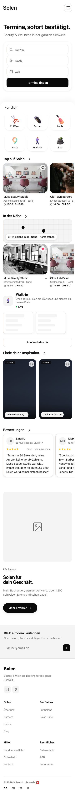
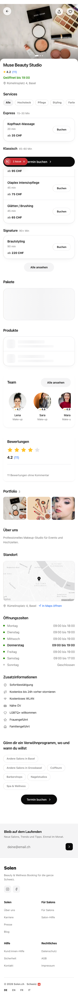
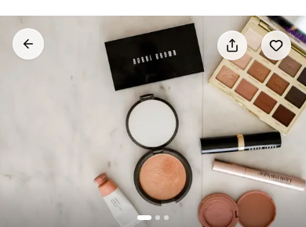
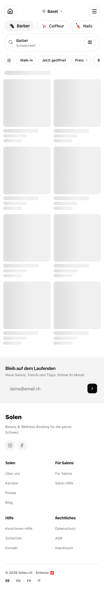
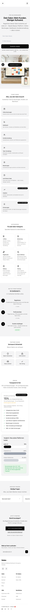
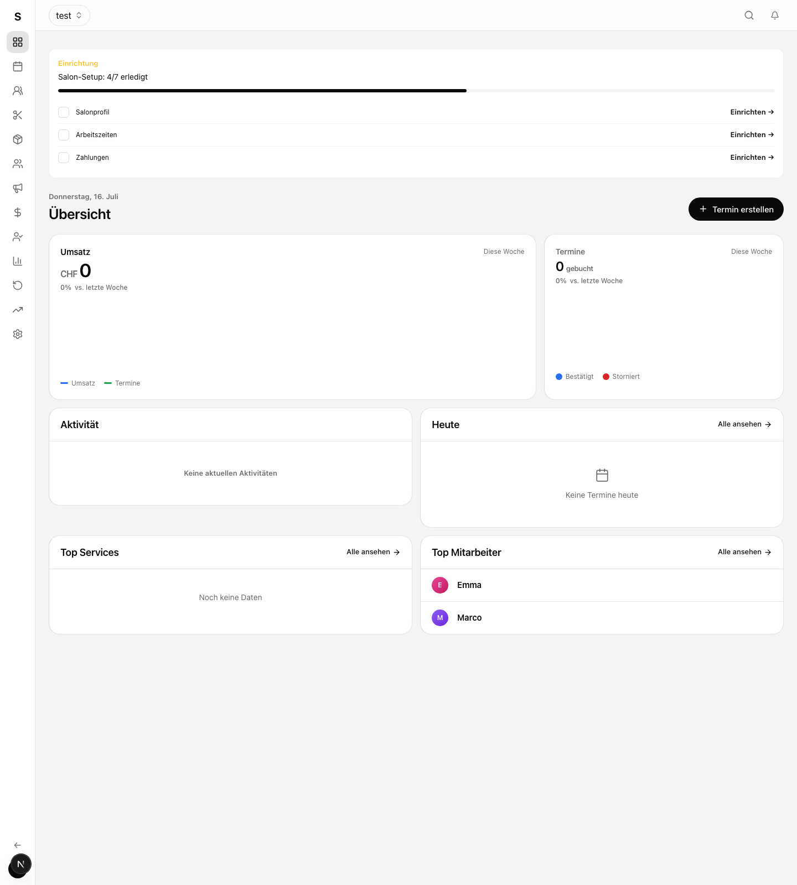

Appointments, instantly confirmed.
Beauty and wellness across Switzerland.
Service, salon or stylist
Every frame below is the WHOLE page and scrolls: the new treatment sits on top, and the real captured page continues underneath it. Today-versions scroll too. The home-hero photo is a capture crop, so it renders soft at hero size; judge the treatment, not the sharpness. Answer like "FB1 a, FB2 a, FB3 a, FB4 a, FB5 yes, FB6 a, FB7 no". My recommendation stays: a on FB1, FB2, FB3, FB4, FB6, yes on FB5, no on FB7 and no on the gradient fork.







